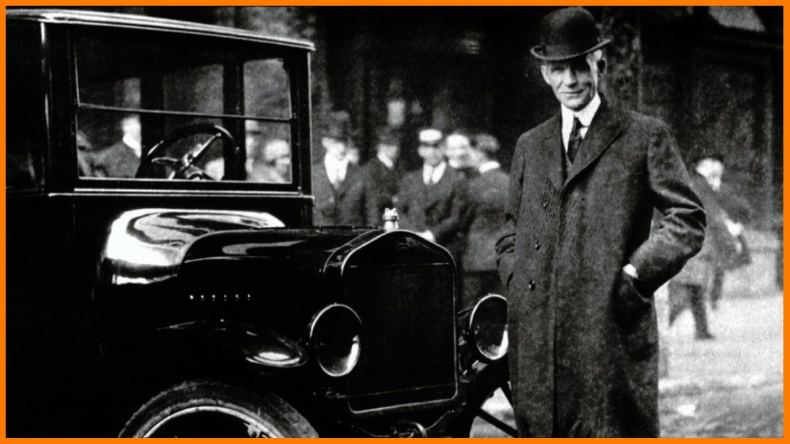

×

History of Ford
Ford Motor Company, founded in 1903 by Henry Ford, revolutionized the automobile industry with the introduction of assembly line production.
This innovation allowed vehicles to be manufactured faster and more efficiently, making cars affordable for the average American family.
Throughout the decades, Ford has produced iconic models such as the Model T, Mustang, and F-150, each leaving a significant mark in automotive history.
The company’s resilience through economic challenges, world wars, and shifting consumer demands has solidified its reputation as a leader in innovation and engineering excellence.
Today, Ford continues to invest in electric and hybrid technologies, staying true to its mission of creating reliable and sustainable vehicles for future generations.
In the early 20th century, Ford became a symbol of industrial progress, introducing not only mass production techniques but also offering fair wages to its workers.
Henry Ford’s $5-a-day wage was groundbreaking at the time, attracting skilled labor and reducing employee turnover.
These practices not only boosted productivity but also contributed to the growth of the American middle class, setting new standards for labor in the manufacturing industry.
The brand's influence expanded internationally, with manufacturing plants and offices established across Europe, Asia, and South America.
By adapting to the needs and preferences of different markets, Ford was able to offer a diverse range of models suited to various lifestyles and climates.
In recent decades, Ford has embraced the challenge of environmental sustainability, launching initiatives to reduce its carbon footprint.
Investments in electric vehicles, like the Mustang Mach-E, and hybrid versions of popular models reflect the company’s vision for a cleaner future.